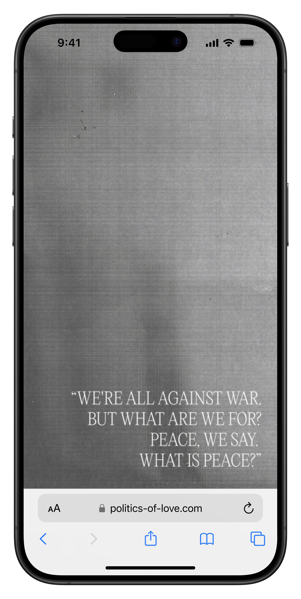
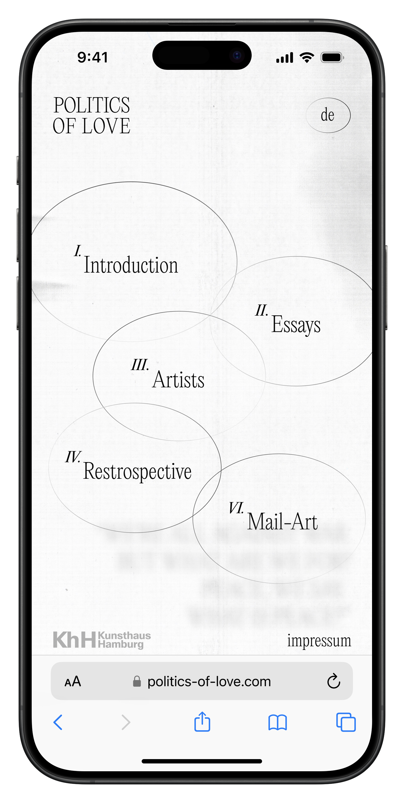

Daryna kuzmina is a hamburg–based graphic- and web designer blending digital and analog, web and editorials.
For inquiries, please get in touch via e-mail: darinka.kuzmina@gmail.com.
Politics of love
a digital publication, 2024


* About this project: Politics of Love is a digital publishing website for a Kunsthaus Hamburg exhibition.
Designed and prototyped with Figma.
A full project overview can be accessed under this link: https://www.behance.net/ Digital-Publishing-Website-Politics-of-Love